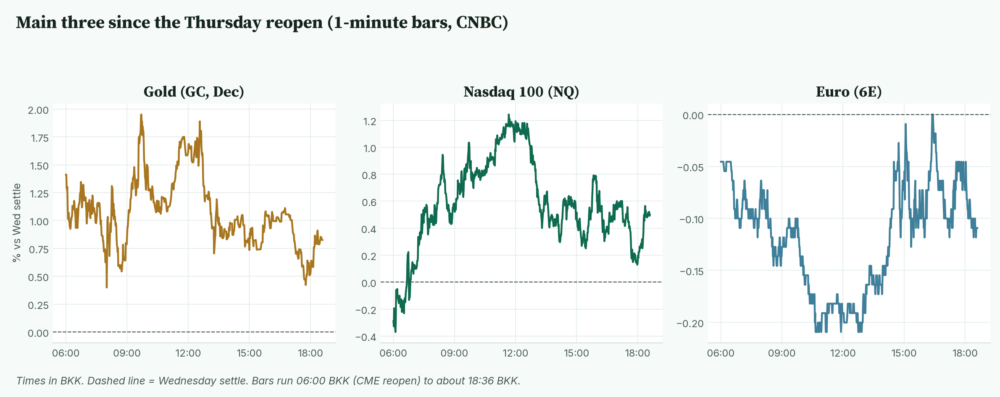
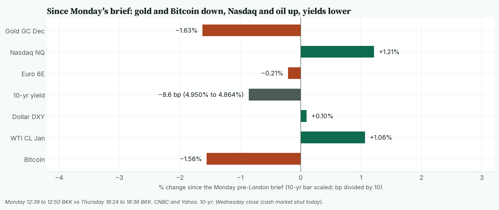
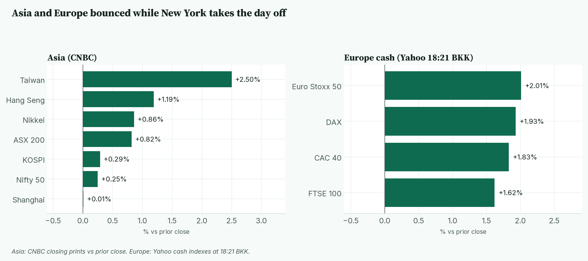
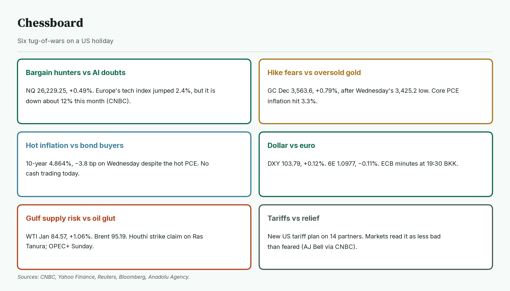
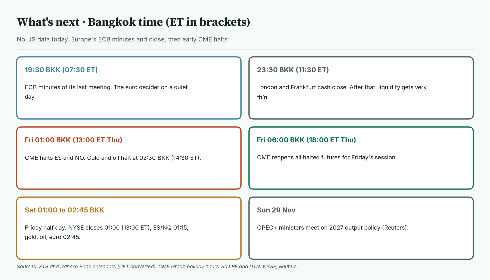
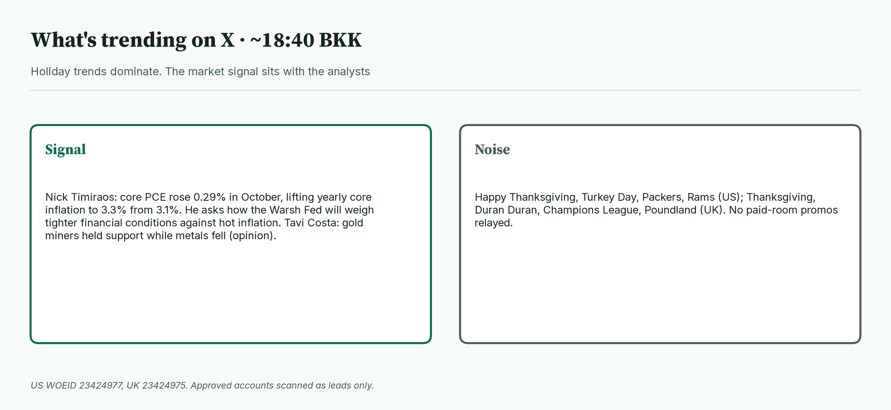

April · Market Intel, pre-NY · Thu Nov 26, 2026 · ~18:45 BKK / ~06:45 New York
Headline: US Thanksgiving. NYSE and Nasdaq are shut, US cash bonds are shut, and there is no US data. Futures trade on a short day. Nasdaq futures are 26,229.25 (+0.49%) and gold futures are 3,563.6 (+0.79%), a day after gold's 3,425.2 low. Euro futures are 1.0977 (−0.11%). The ECB minutes at 19:30 BKK and Europe's close at 23:30 BKK decide a thin session.
So what: this is a holiday bounce on low volume. Wednesday's hot inflation data still points to a December Fed hike, so treat today's moves as provisional.
No pre-London brief ran today (routines were paused until the 18:14 BKK usage reset). "Since the last brief" means since Monday's pre-London brief (Nov 23, ~12:40 BKK).
 Caption: Futures at 18:24 to 18:26 BKK versus Wednesday's settle. Gold and Nasdaq are up modestly; the euro is slightly lower. The 10-year tile is Wednesday's close.
Caption: Futures at 18:24 to 18:26 BKK versus Wednesday's settle. Gold and Nasdaq are up modestly; the euro is slightly lower. The 10-year tile is Wednesday's close.
Top signals
- US markets are closed for Thanksgiving. CME futures trade but halt early (CME Group via LPF, DTN).
- Gold futures bounced 0.79% after hitting 3,425.2 on Wednesday (CNBC 1-minute bars). Spot gold touched its lowest since August 2025 (Bloomberg).
- Core PCE inflation rose to 3.3% a year in October, above the 3.2% forecast (CNBC, Anadolu).
- Europe is up about 2%. Chip stocks led the rebound (CNBC, Yahoo).
1) Main instruments The three main contracts since the Thursday reopen, as a % move from Wednesday's settle. Gold held above its settle all day. Nasdaq peaked near midday, and the euro clawed back to flat by 16:24 BKK. |
 Caption: The three main contracts since the Thursday reopen, as a % move from Wednesday's settle. Gold held above its settle all day. Nasdaq peaked near midday, and the euro clawed back to flat by 16:24 BKK.
(Quotes are Yahoo Finance futures at 18:24 to 18:26 BKK (06:24 to 06:26 New York), matching CNBC. Session highs and lows use CNBC 1-minute bars from the 06:00 BKK CME reopen (18:00 New York Wednesday). The first bar is 06:00 BKK. Yahoo's 1-minute bars stopped at 11:58 BKK today, so I switched to CNBC.)
Caption: The three main contracts since the Thursday reopen, as a % move from Wednesday's settle. Gold held above its settle all day. Nasdaq peaked near midday, and the euro clawed back to flat by 16:24 BKK.
(Quotes are Yahoo Finance futures at 18:24 to 18:26 BKK (06:24 to 06:26 New York), matching CNBC. Session highs and lows use CNBC 1-minute bars from the 06:00 BKK CME reopen (18:00 New York Wednesday). The first bar is 06:00 BKK. Yahoo's 1-minute bars stopped at 11:58 BKK today, so I switched to CNBC.)
- Gold futures (GC, Dec): 3,563.6, +0.79%, at 18:24 BKK. Driver: bargain hunting after a sharp sell-off, capped by bets on more Fed hikes (Bloomberg). Wednesday's settle was 3,535.8. Today's range is 3,549.9 (08:00 BKK) to 3,604.9 (09:42 BKK). Spot gold is 3,565.12, −0.44% (CNBC, 18:36 BKK).
- Gold broke its prior low. December futures fell to 3,425.2 at 22:18 BKK Wednesday, below last Friday's 3,502.9 (CNBC 1-minute bars). It is down from 3,622.5 at Monday's brief.
- Nasdaq 100 futures (NQ, Dec): 26,229.25, +0.49%, at 18:26 BKK. Driver: a global chip rebound after Wednesday's tech sell-off (CNBC). Wednesday's settle was 26,100.25. Today's range is 25,997.50 (06:06 BKK) to 26,436.00 (11:41 BKK). It is up from 25,914.50 at Monday's brief.
- Euro futures (6E, Dec): 1.0977, −0.11%, at 18:26 BKK. Driver: a firm dollar on Fed hike bets, ahead of the ECB minutes (Anadolu, XTB). Wednesday's settle was 1.0989. Today's range is 1.0965 (10:41 BKK) to 1.0990 (16:24 BKK). It is down from 1.1000 at Monday's brief.
- Takeaway: all three sit mid-range in a quiet holiday tape.
Context. The dollar index (DXY, the dollar against six major currencies) is 103.79, +0.12% (CNBC, 18:36 BKK). The 10-year US yield (what the US government pays to borrow for 10 years) is 4.864%, down 3.8 basis points (CNBC, 05:05 BKK, Wednesday's close; the US cash bond market is shut today; a basis point is 0.01 percentage point). The VIX (the "fear gauge" built from S&P 500 option prices) is 27.09, −4.24% (CNBC, 18:36 BKK, an indicative print on a holiday). US oil (CL, January) is 84.57, +1.06% (CNBC, 18:26 BKK). S&P 500 futures (ES) are 7,233.50, +0.52% (Yahoo, 18:26 BKK). Bitcoin is $60,580, +0.97% versus CNBC's previous close (CNBC/Coin Metrics, 18:36 BKK).
2) Premarket earnings and movers
- None today. US stock markets are closed for Thanksgiving, so there is no premarket session and no earnings (NYSE holiday calendar, Anadolu).
- Wednesday's close: the Dow rose 0.33%, the S&P 500 fell 0.25% and the Nasdaq Composite fell 0.62% (CNBC).
- Anthropic closed at $82.8 on Wednesday, slightly below its $83 IPO price (Anadolu).
- Takeaway: no US stock catalysts until Friday's half day.
3) Rates, FX and oil What moved since Monday's brief. Yields fell 8.6 bp and oil rose, while gold and Bitcoin slipped. |
 Caption: What moved since Monday's brief. Yields fell 8.6 bp and oil rose, while gold and Bitcoin slipped.
Caption: What moved since Monday's brief. Yields fell 8.6 bp and oil rose, while gold and Bitcoin slipped.
- Yields fell on Wednesday despite hot inflation. CNBC closes: 2-year 4.650% (−2.1 bp), 10-year 4.864% (−3.8 bp), 30-year 5.254% (−3.8 bp). The 10-year was 4.950% at Monday's brief.
- Inflation. The PCE price index rose 3.8% a year in October. Core PCE (excluding food and energy) rose 3.3%, up from 3.1% (CNBC, Anadolu).
- The Fed. A 25 bp December hike is widely expected (Anadolu). Nick Timiraos notes core goods prices are running well above pre-pandemic norms (X post; lead only).
- Dollar. DXY is 103.79, up from 103.689 at Monday's brief. EUR/USD is 1.0968 and USD/JPY is 159.30 (CNBC, 18:36 BKK).
- Oil. WTI (January) 84.57, up from 83.68 at Monday's brief. Brent (January) is 95.19, +0.61% (CNBC, 18:26 BKK). Today's WTI range is 83.16 to 85.23 (CNBC 1-minute bars).
- Why oil rose. Yemen's Houthis said they attacked Saudi Arabia's Ras Tanura refinery. Brent settled 3.5% higher Wednesday at $94.61 (Reuters). Saudi air defences said they downed four drones (The National).
- No WTI settlement today because of the holiday (Reuters via CNBC).
- Takeaway: bonds rallied and oil firmed. That mix is awkward for a Fed fighting 3.3% core inflation.
4) Why it matters Asia and Europe both bounced. Taiwan and Europe's big indexes led. |
 Caption: Asia and Europe both bounced. Taiwan and Europe's big indexes led.
Caption: Asia and Europe both bounced. Taiwan and Europe's big indexes led.
- Asia rose. Taiwan +2.50%, Hang Seng +1.19%, Nikkei +0.86%, ASX 200 +0.82%, KOSPI +0.29%, Nifty +0.25%, Shanghai +0.01% (CNBC).
- Korea's central bank hiked rates to a two-year high at its final meeting of the year (CNBC).
- Europe is higher. Euro Stoxx 50 +2.01%, DAX +1.93%, CAC 40 +1.83%, FTSE 100 +1.62% (Yahoo, 18:21 BKK). Europe's tech index is still down about 12% this month (CNBC).
- New US tariffs. Washington proposed duties on 14 trading partners, including China, the EU and India. They go through public comment first (Reuters). AJ Bell called them "not as bad as feared" (CNBC).
- Mentor: on a US holiday, fewer traders are active. Thin trading means small orders can move prices a lot, so moves can reverse when New York returns.
- Takeaway: the world is buying the dip while New York is away. Friday's half day is the first real test.
5) Chessboard Six tug-of-wars on a US holiday. Inflation and the Fed still move the main three most. |
 Caption: Six tug-of-wars on a US holiday. Inflation and the Fed still move the main three most.
Caption: Six tug-of-wars on a US holiday. Inflation and the Fed still move the main three most.
- Bargain hunters vs AI doubts. NQ +0.49%. Chips rebounded in Asia and Europe.
- Hike fears vs oversold gold. GC 3,563.6, well above Wednesday's 3,425.2 low.
- Hot inflation vs bond buyers. The 10-year fell to 4.864% on Wednesday.
- Dollar vs euro. DXY 103.79. 6E 1.0977, near the middle of its range.
- Gulf supply risk vs oil glut. WTI 84.57. OPEC+ meets on Sunday (Reuters).
- Tariffs vs relief. The new tariff plan has not yet hit sentiment.
- Takeaway: the board leans to a relief bounce, but on thin volume.
6) US data calendar (BKK times, ET in brackets) No US data today. The ECB minutes and Europe's close matter most, then early CME halts. |
 Caption: No US data today. The ECB minutes and Europe's close matter most, then early CME halts.
Caption: No US data today. The ECB minutes and Europe's close matter most, then early CME halts.
- No major US data today. NYSE, Nasdaq and the US cash bond market are closed for Thanksgiving.
- 19:30 (7:30 AM ET): ECB minutes (the "account" of its last policy meeting) (XTB, Danske Bank). This is the euro decider.
- 23:30 (11:30 AM ET): London and Frankfurt cash markets close. This is the liquidity decider. After it, trading gets very thin.
- Fri 01:00 (1:00 PM ET Thu): CME halts ES and NQ. Fri 02:30 (2:30 PM ET): gold and oil halt. The euro trades normal hours (CME Group via LPF, DTN).
- Fri 06:00 (6:00 PM ET Thu): CME reopens for Friday's session.
- Friday half day: NYSE closes at Sat 01:00 BKK (1:00 PM ET). CME ES and NQ close at Sat 01:15 (1:15 PM ET). Gold, oil and the euro close at Sat 02:45 (2:45 PM ET) (NYSE, CME Group via LPF, DTN).
- Sun Nov 29: OPEC+ ministers meet on 2027 output policy (Reuters).
- Takeaway: a hawkish ECB account could lift the euro off its 1.0965 low; little else is scheduled.
7) Scenarios and levels
- Relief holds (Europe closes strong). NQ could retest 26,436.00. Gold could retest 3,604.9. The euro could test 1.0990.
- Steady (the base case). Ranges likely hold into the halts. GC 3,549.9 to 3,604.9, NQ 25,997.50 to 26,436.00, 6E 1.0965 to 1.0990.
- Bounce fades (thin selling, hike fears). Watch GC 3,549.9, NQ 25,997.50 and 6E 1.0965 for breaks lower. Below that, gold's 3,425.2 low is the big level.
- These are possible paths, not forecasts.
8) Undercovered
- China's trade truce with the US expires on January 10. The new tariffs would respect its 20% cap (Reuters via The Hindu BusinessLine).
- Nvidia's Jensen Huang was ousted as CEO and then returned, CNBC reported, adding to tech jitters (CNBC).
- At least two ships hit Iranian mines in the Strait of Hormuz, Reuters reported. A projectile also exploded near a tanker west of Dubai (Reuters via CNBC, UKMTO via The National).
- Silver fell below $40 on Wednesday, the first time since September 2025, then bounced (Anadolu). Silver futures are 41.235, +2.94% (CNBC, 18:23 BKK).
- Takeaway: oil supply risk is building quietly behind the AI headlines.
9) What's trending on X (~18:40 BKK) Holiday and football trends dominate. The market signal comes from the analysts, not the trends. |
 Caption: Holiday and football trends dominate. The market signal comes from the analysts, not the trends.
Caption: Holiday and football trends dominate. The market signal comes from the analysts, not the trends.
- US: Happy Thanksgiving, Packers, Rams, Turkey Day.
- UK: Thanksgiving, Duran Duran, No 10, Ofgem.
- Signal: Nick Timiraos says core PCE rose 0.29% in October, lifting yearly core inflation to 3.3%; this matches CNBC. He asks how Fed Chair Warsh's Fed will weigh tighter financial conditions against hot inflation.
- Lead only: Tavi Costa says gold miners are sitting on major support. That is an opinion, not data.
- Removed: Tavi Costa's claim that silver is having its worst year in 30 years (not verified against a primary source).
- Noise: holiday greetings, NFL games, Duran Duran. Smashelito posted his ES plan; vwaptrader1 posted a livestream link (not relayed).
- Takeaway: the only market chatter is about inflation and the Fed.
Bottom line: a holiday bounce, not a turn. For Jim: Nasdaq at 26,229.25 sits mid-range, 25,997.50 to 26,436.00. Gold at 3,563.6 sits near its 3,549.9 low; Wednesday's 3,425.2 is the bigger floor. The euro at 1.0977 sits mid-range, 1.0965 to 1.0990. Interpretive note: the ECB minutes at 19:30 BKK and Europe's 23:30 BKK close are the only real triggers before the early CME halts. 🔮 Interpretive, not data: a day of gratitude in a market short on it. Symbol, not signal.
Confidence: Futures levels: high (Yahoo, matching CNBC). Gold uses the December contract (Yahoo GCZ26 and CNBC @GC.1); Yahoo's GC=F has rolled to February. Session ranges: CNBC 1-minute bars from the 06:00 BKK reopen, because Yahoo's 1-minute bars stopped at 11:58 BKK (degraded feed, switched). Gold's 3,425.2 Wednesday low: CNBC 1-minute bars. Yields: CNBC Wednesday close; no cash trading today. VIX: indicative holiday print. WTI: CNBC January contract. DXY, yen, Bitcoin, spot gold, silver and Asia: CNBC, time-stamped. Europe: Yahoo, 18:21 BKK. PCE: CNBC, Anadolu, matched by Timiraos. Oil news: Reuters, The National. Tariffs: Reuters. Holiday hours: CME Group via LPF and DTN. Calendar: XTB, Danske Bank (CET converted). X: approved accounts are leads only. Removed: Tavi Costa's silver claim (unverified).
Charts: /workspace/april-charts/2026-11-26/pre-ny-{scoreboard,main3,rates,asia,chess,leading,xsplit}.png |